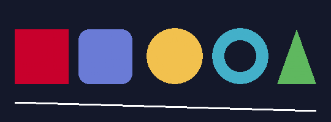
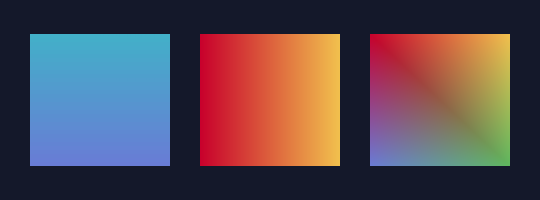
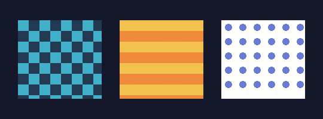
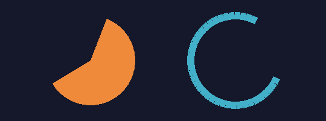
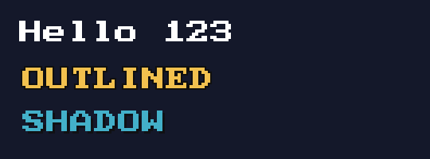
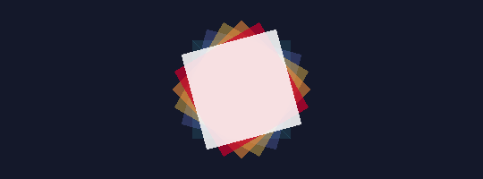
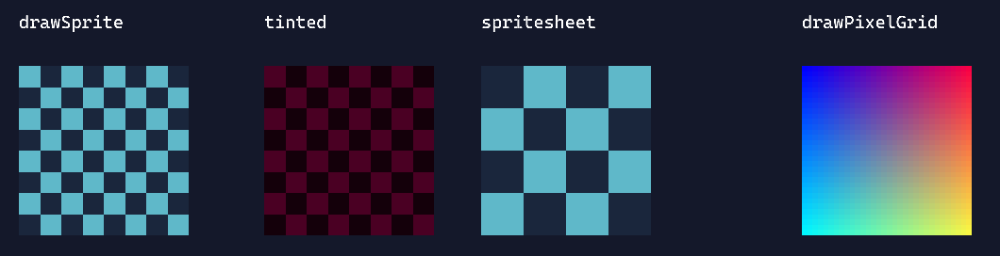

FEATURES
機能リファレンス
MitiruEngine でできることを、コピペできるコード付きで並べた逆引きの一覧です。「丸を描きたい」「パッドを読みたい」「音を鳴らしたい」——やりたいことから探せます。触る相手は基本 3 つ、update(Input in, Hud hud, float dt) の in と hud、draw(Screen& s) の s だけです。座標は左上が (0, 0)、標準の画面は 1280 × 720。長さの単位はピクセル、角度は関数により度（deg）かラジアン（rad）——各節に明記します。まだ何も作っていなければ、先に はじめてのゲーム で土台を作ると読みやすくなります。
① ゲームの骨組み — struct / update / draw
ゲームの状態を 1 つの struct に持ち、update で動かし、draw で描く。最後に MITIRU_GAME を 1 行。これだけで動きます。
#include <mitiru.hpp> using namespace mitiru; struct MyGame { float x = 640; // 状態はここに置くだけ（ホストが保持する） void init() { x = 640; } // 起動時に 1 回（任意） void update(Input in, float dt) { // 毎フレーム。dt = 前フレームからの経過秒 if (in.down(Key::Right)) x += 320 * dt; } void draw(Screen& s) { // 毎フレーム。画面に描く s.fillScreen(color::Black); s.drawRectCentered(x, 360, 48, 48, color::Cyan); } }; MITIRU_GAME(MyGame) // これ 1 行で DLL の入口が出来る
init / update / draw はすべて任意——書いたものだけ呼ばれます。update は欲しい引数だけ受け取れます（使わないものは省略可）。
| void update(Input in, float dt) | 入力だけ要るとき（いちばん多い） |
| void update(Input in, Hud hud, float dt) | 音・HTML UI・道具も使うとき |
| void update(float dt) | 時間だけで動かすとき |
| void draw(Screen& s) | 描画 |
MITIRU_GAME がコンパイル時に確認）。可変長は mitiru::FixedVec<T,N> を使い、中で使う部品（敵・弾など）は普通に class で書いて構いません。トップだけ素直に保つ住み分けです（→ ⑩ AI Lens と決定論）。② 図形を描く — 四角・円・線・多角形
いちばんよく使う図形は、座標を直接渡すだけで描けます（初心者向けの簡単版）。下は実際の描画結果です。




void draw(Screen& s) { s.fillScreen(hex(0x14182A)); // 背景をひと色で塗る s.drawRect(40, 40, 120, 80, color::Red); // (x, y) 左上から w×h の四角 s.drawRectCentered(640, 360, 100, 100, color::Blue); // (cx, cy) 中心の四角 s.fillCircle(900, 200, 48, color::Yellow); // (cx, cy) 中心・半径 r の円 s.line(0, 0, 1280, 720, color::White, 3); // (x0,y0)-(x1,y1) の線（太さ 3） }
もっと種類が要るときは、矩形を Rect{x, y, w, h}、座標を Vec2{x, y} で渡します。下はすべて Screen のメソッドです。
| s.drawRectFrame({x,y,w,h}, col, 2) | 四角の枠線（太さ指定） |
| s.drawRoundedRect({x,y,w,h}, col, 8) | 角丸四角（半径 8）。枠版 drawRoundedRectFrame |
| s.drawCircle({cx,cy}, r, col) | 円。枠版 drawCircleFrame |
| s.drawEllipse({cx,cy}, rx, ry, col) | 楕円 |
| s.drawRing({cx,cy}, outer, inner, col) | リング（ドーナツ） |
| s.drawArc({cx,cy}, r, a0, a1, col, 2) | 円弧（角度は rad、0 = 右） |
| s.drawPie({cx,cy}, r, a0, a1, col) | 扇形（rad） |
| s.drawTriangle(p0, p1, p2, col) | 塗り三角形（p は Vec2） |
| s.drawPolygon(points, col) | 凸多角形（std::vector<Vec2>） |
| s.drawRectRotated({x,y,w,h}, col, deg) | 回転した四角（角度は度） |
| s.drawGradientRect({x,y,w,h}, top, bottom) | 上→下グラデ。横版 drawGradientRectH、4 隅版 drawGradientRect4 |
| s.drawRectPattern(rect, type, cell, c1, c2) | 市松・ストライプ・ドット（Screen::PatternType） |
| s.drawDashedLine(from, to, th, dash, gap, col) | 破線 |
Rect{x, y, 幅, 高さ}、Vec2{x, y} と波かっこで作るだけ。#include <mitiru.hpp> で一緒に使えるようになります。当たり判定にも同じ Rect を使います（→ ⑯ 当たり判定）。③ 色 — 色の書き方
色は 0–255・16 進・名前で作れます。型はすべて mitiru::Color。
rgb(200, 0, 44) // 0–255 の RGB（不透明） rgba(255, 255, 0, 128) // RGBA（a=0 透明 … 255 不透明）= 半透明の黄 hex(0xC8002C) // 6 桁 16 進 0xRRGGBB hexa(0xC8002C80) // 8 桁 16 進 0xRRGGBBAA（alpha 込み） color::White color::Black color::Gray color::Red color::Green color::Blue color::Yellow color::Orange color::Cyan color::Clear // 名前付き
半透明にしたいときは Color c = color::Red; c.a = 0.3f; のように .a（0.0–1.0）を下げます。重ね塗りや残像・影に便利です。
④ 文字を描く — テキスト
いちばん簡単なのは s.text(...)。枠に収めて整列したいときは drawTextInRect を使います（はみ出しは自動で … に省略され、レイアウトが崩れません）。

s.text / drawTextOutlined（縁取り）/ drawTextWithShadow（影）の実描画。s.text(/* str */ "SCORE " + std::to_string(score), 24, 20, color::White, 24); // (文字, x, y, 色, 大きさ) // 枠 {x,y,w,h} の中で中央寄せ。alignH / alignV で位置を選ぶ。 s.drawTextInRect({0, 320, 1280, 80}, "GAME OVER", color::White, 48, Screen::TextAlignH::Center, Screen::TextAlignV::Middle);
| s.drawTextWrapped(rect, str, col, size) | 枠の幅で単語折り返し（説明文・セリフ） |
| s.drawTextClipped(rect, str, col, size) | 1 行・はみ出しは … に省略 |
| s.drawTextWithShadow(rect, str, col, size, shadowCol) | 影付き |
| s.drawTextOutlined(rect, str, col, outlineCol) | 縁取り（背景に埋もれない見出し） |
| s.drawTextBold(rect, str, col, size) | 擬似ボールド |
| s.measureText(str, size) | 描画サイズを計測（{幅, 高さ}。中央寄せの自前計算に） |
フォントを変える
既定はエンジン内蔵フォントです。C++ 描画（s.text など）で日本語を出したいときは、mitiru.toml でアトラスに焼き込む文字の範囲を選びます。
[font] atlas = "japanese" # latin = 英数のみ（起動 1 秒未満）/ kana = かな / japanese = かな + 常用漢字
未指定（または "none"）はフォント無しの最速起動——文字を全部 HTML/CSS 側で出す構成向けです。HTML 側のフォントはふつうの CSS（font-family / @font-face）で自由に変えられます。任意の TTF への差し替えは Screen の低レベル API で行います（上級向け。フォントと描画・計測コールバックを注入する型消去 API）:
| s.setTrueTypeFont(font, drawFn, measureFn) | TTF レンダラーを接続（内蔵フォントより優先） |
| s.setSdfFont(font, drawFn, measureFn) | SDF レンダラーを接続（TTF よりさらに優先。任意サイズで高品質） |
| s.registerFont("title", font, drawFn, measureFn) | 名前付きフォントを登録 |
| s.setFont("title") | 登録済みフォントへ切り替え（空文字列で既定に戻す） |
⑤ 移動・回転・拡大 — 座標変換
一時的に座標系をずらす／回す／拡大すると、同じ描画コードを使い回せます。push… と popTransform() は必ずペアで。

drawRectRotated で少しずつ回して重ねたもの（pushRotation でも同じ）。s.pushTransform(camX, camY); // 平行移動（カメラのスクロールに） drawWorld(s); // この中の描画はすべて camX,camY ずれる s.popTransform(); // (cx, cy) を中心に rad だけ回す s.pushRotation(angleRad, cx, cy); s.drawRectCentered(cx, cy, 60, 60, color::Orange); s.popTransform(); // グループ描画: 位置 + 回転（度）をまとめて適用。中はローカル座標で描く。 s.drawGroup({px, py}, spinDeg, [&](Screen& g) { g.drawRectCentered(0, 0, 40, 40, color::Cyan); // 原点 = (px, py) });
pushTransform(tx, ty, sx, sy) なら拡大縮小も同時に。複数 push は重ねられます（最後に積んだものが先に効く）。必ず同じ数だけ popTransform() してください。
⑥ 画像・スプライト — 画像を描く
最も基本的な描き方は id 指定です。assets/sprites/hero.png を置いたら:
s.sprite("hero", x, y); // これだけ。読み込み・キャッシュはエンジンがやる s.sprite("hero", x, y, 2.0f); // 2 倍サイズ
音の hud.play("hit") と同じ「ファイルを置いて id で呼ぶ」規約です。ファイルが無ければ初回に 1 行だけ警告が出ます。PNG を上書き保存すると実行中のゲームに約 0.5 秒で反映されます（絵を描きながら結果を確認できます）。細かい制御（回転・切り出し・ティント）が要るときは Texture を自分で持ちます。読み込みは重いので init() で 1 回だけ——draw() の中で毎フレーム読み込まないこと。

drawSprite（テクスチャ）/ ティント乗算 / スプライトシートの 1 コマ切り出し / drawPixelGrid（手続き生成ピクセル）。#include <mitiru/render/Texture.hpp> struct MyGame { render::Texture tex; void init() { if (auto t = render::Texture::fromFile("player.png")) tex = std::move(*t); } void draw(Screen& s) { s.drawSprite(tex, {x, y, 64, 64}); // 描画先の矩形に貼る s.drawSprite(tex, {x, y, 64, 64}, color::Red); // 色を乗算（点滅・ダメージ表現） // スプライトシートの 1 コマを切り出す: src は元画像内のピクセル矩形、flipX で左右反転 s.drawSprite(tex, {x, y, 64, 64}, {32.0f * frame, 0, 32, 32}, color::White, facingLeft); } };
render::Texture には solid(w,h,col)（単色）や checker(...)（市松）もあり、画像が無くても試せます。ピクセルを自前で作って表示したいときは s.drawPixelGrid({x,y,w,h}, pixels, pw, ph)——RGBA8 のバッファをそのまま 1 枚の絵として描けます（自作ラスタライザや手続き的生成向け）。
Texture をトップの struct のメンバに持つと flat POD ではなくなり、MITIRU_GAME がコンパイルエラーにします（録画・巻き戻しの単一 state を守るため → ⑩ AI Lens と決定論）。画像はグローバル／別オブジェクトに分け、トップの struct には座標やフレーム番号など「数値だけ」を残します。⑦ 3D 表示 — 2D の上にのせる
正直に書くと、MitiruEngine の正面は 2D + HTML/CSS で、3D は「2D に混ぜる」位置づけです。やり方は素直で、ふだんのゲームの draw(Screen& s) の中で s.camera3D でカメラを決め、s.drawMesh で組み込みメッシュ（"cube" / "sphere" / "plane"）を置くだけ。エンジンの GPU 3D レンダラーがアンチエイリアス（MSAA）と影（シャドウマップ）付きで描き、2D の HUD はその上に重なります。
void draw(Screen& s) { s.clear(hex(0x111521)); // 3D の背景色 // カメラと光（drawMesh の前に） s.camera3D({std::sin(t)*13, 8.5f, std::cos(t)*13}, {0, 0.4f, 0}, 54); // 視点・注視点・画角 s.light3D({-0.5f, -1, -0.4f}); // 平行光の向き // 組み込みメッシュを 位置・大きさ・回転(度)・色 で置く s.drawMesh("cube", {0, -0.15f, 0}, {14, 0.3f, 14}, {0,0,0}, hex(0x3A4250)); // 足場 s.drawMesh("cube", {0, 0.7f, 0}, {1.4f,1.4f,1.4f}, {0, t*60, 0}, hex(0xEA5535)); s.drawMesh("sphere", {2.7f, 0.9f, 0}, {1.2f,1.2f,1.2f}, {0,0,0}, hex(0x4C95F2)); s.text("3D + 2D HUD", 28, 22, color::White, 28); // HUD は 2D で上へ }
立方体・球・板の組み込みメッシュのほか、loadGltfMeshFromFile("model.gltf") で読み込んだメッシュも並べられます。動くデモと完全なコードは 3D のページ にまとめました。大量ポリゴンや凝ったシェーダー前提の本格 3D は対象外——あくまで 2D に 3D を混ぜる道具です。
⑧ キーボード・マウス — 入力を読む（Input）
in から読みます。「押している間」と「押した瞬間」は別メソッドです——移動は down、ジャンプや決定は pressed。
void update(Input in, float dt) { if (in.down(Key::Left)) x -= 320 * dt; // 押されている間ずっと true if (in.pressed(Key::Space)) jump(); // 押した瞬間だけ true if (in.released(Key::Z)) release(); // 離した瞬間だけ true float mx = in.mouseX(), my = in.mouseY(); if (in.mousePressed(0)) shootAt(mx, my); // 0=左 1=右 2=中 }
true です——down は押している間ずっと、pressed は押した瞬間（F2）だけ、released は離した瞬間（F6）だけ。移動は down、ジャンプや決定は pressed を使い分けます。キーは Key::Left / Up / Right / Down / Space / Enter / Escape / Shift / A…Z / Num0…Num9 / F1…F12 など名前で。一覧に無いキーも Key{0x..}（Windows 仮想キーコード）で渡せます。マウスは mouseDown / mousePressed / mouseReleased。
HTML のボタンから届いた合図は in.action("name") でそのフレームだけ true（→ ⑬ HTML / CSS で画面・画面を作る）。値付きなら in.actionPayload("name")。
⑨ ゲームパッド — コントローラ
Xbox 系（XInput）も DualShock 4 などの DirectInput 系も、何も設定せずそのまま動きます（既定で有効）。機種の違いはエンジンが吸収するので、ゲーム側は同じ API を読むだけです。
void update(Input in, float dt) { if (!in.padConnected()) return; if (in.padPressed(Pad::A)) jump(); // down / pressed / released + Pad::A B X Y LB RB Start … Stick l = in.leftStick(); // 各成分 -1.0 … 1.0 x += l.x * 320 * dt; float rt = in.rightTrigger(); // 0.0 … 1.0（leftTrigger も） }
ボタンは Pad::Up/Down/Left/Right/Start/Back/A/B/X/Y/LB/RB/LStick/RStick。スティックは leftStick() / rightStick()（{x, y}）、トリガーは leftTrigger() / rightTrigger()。
キーもパッドも、1 つの名前で
「ジャンプは Space でも W でもパッドの A でも」——その束ねを毎回 if で書く必要はありません。表が 1 枚あれば、表がそのまま操作仕様書になります:
enum class Act : uint8_t { Jump, Throw, Pause }; static constexpr Binding<Act> kMap[] = { // アクション キー (どれでも) パッド (どれでも) { Act::Jump, { Key::Space, Key::W, Key::Up }, { Pad::A } }, { Act::Throw, { Key::X }, { Pad::B, Pad::RB } }, { Act::Pause, { Key::Enter }, { Pad::Start } }, }; void update(Input in, float dt) { if (in.pressed(kMap, Act::Jump)) jump(); // 押した瞬間 (キーもパッドも) if (in.released(kMap, Act::Jump)) cutJump(); // 可変ジャンプの頭打ちも 1 行 }
表すら書きたくない最初の 1 本には、宣言ゼロの定番セットがあります:
if (in.confirmPressed()) advance(); // Space / Z / Enter + パッド A / Start if (in.cancelPressed()) back(); // Escape + パッド B / Back Stick m = in.move(); // 矢印 + WASD + 十字キー + 左スティック統合 (-1..1) x += m.x * 320 * dt; // これだけで全デバイス対応の移動
メニューの上下送り（スティック倒しっぱなしのリピート含む）は mitiru::MenuCursorを状態に持って cursor.updateVertical(in, 項目数, dt) を呼ぶだけ。POD なので巻き戻しにも乗ります。
レシピ: キー設定をゲーム中に変えられるようにする（リバインド）手順は docs/INPUT_REBIND_RECIPE.md（GitHub） にまとまっています。
⑩ 乱数・決定論・AI Lens — 1 個の flat POD から生える
乱数は mitiru::Random で。毎フレーム同じ入力なら必ず同じ結果（決定論）になるよう、種を in.rngSeed() から取ると、プレイを録画して完全に再現できます。
#include <mitiru.hpp> Random rng(in.rngSeed()); // 録画リプレイで bit-exact に再現したいときは種をここから int dmg = rng.nextInt(10, 50); // 10〜50 の整数 float angle = rng.nextFloat(0, 6.28f); bool crit = rng.nextBool(0.15f); // 15% で true
flat POD という 1 つの制約
ゲーム状態（トップの struct）は flat POD 必須です——std::vector / std::string の代わりに mitiru::FixedVec<T,N> / FixedString<N> を使います。MITIRU_GAME(MyGame) がこれをコンパイル時に確認するので、うっかりポインタを混ぜたらその場でエラーになり、録画・巻き戻しから黙って外れることがありません。状態が 1 個の平坦な構造体に収まっているからこそ、本来は別々に作り込む重い機能が、同じ memcpy と記述子から追加コストなしで生えてきます。
memcpy と記述子から生えます。別々に作り込むはずの重い機能が、1 つの制約の副産物になります。| 入力と種を記録 | 同じプレイを 1 bit も違わず（bit-exact）再生。リプレイがそのまま回帰テストに（mitiru run --record / mitiru replay） |
| 毎フレームの状態を記録 | 過去フレームへ巻き戻して「なぜ HP が 50 になった」を原因の 1 行まで追える（→ ⑭ の timetravel） |
| MITIRU_REFLECT で宣言 | 同じ flat POD を構造化 JSON として外から読める（下記 AI Lens） |
AI Lens — 同じ flat POD から、AI も全状態を読める
フィールドを MITIRU_REFLECT(MyGame, player, enemies, hp) と宣言すると、エンジンがゲームの全状態（GameMemory）を構造化 JSON にします。MITIRU_AI=1 mitiru run で localhost API が立ち、現在・差分・反実仮想を叩けます。巻き戻し・録画とまったく同じ 1 つの flat POD から、AI 可視化まで生えています。
// ゲーム状態のフィールドを宣言するだけ（コードの追加はこれだけ） MITIRU_REFLECT(MyGame, player, enemies, hp);
# AI 用 API を立てて起動（zero-config）
MITIRU_AI=1 mitiru run
| GET /api/ai/state | 現在の全状態を構造化 JSON で（player / enemies / hp …） |
| GET /api/ai/diff | フレーム間で何が変わったかの差分 |
| POST /api/ai/branch | 反実仮想——「この入力を続けたら?」を live を壊さず試行 |
敵リストのような「struct の配列」を読ませるときは、要素の struct を MITIRU_REFLECT_STRUCT で先に宣言します（どちらもグローバルスコープに書く）:
// FixedVec<Enemy, N> の要素 struct を先に（ネストは 1 段。登録は 8 個まで） MITIRU_REFLECT_STRUCT(Enemy, x, y, alive); MITIRU_REFLECT(MyGame, player, enemies, hp); // 本体。各マクロ最大 16 フィールド
巻き戻して、直して、そこから再生
エンジンは直近 5 秒の状態と入力を常時保持しています。バグの瞬間を見つけたら巻き戻し、コードを直して保存（ホットリロード）すると、同じ入力がそこから再適用され、直したコードでバグの瞬間をもう一度見られます。再現手順を手で組み立て直す必要がありません。状態が 1 個の flat POD だからできる、このエンジン固有の開発ループです。
⑪ 音 — 効果音・BGM
音は hud から id で鳴らします（鳴らしたい瞬間に呼ぶだけ）。update(Input in, Hud hud, float dt) の形にして:
hud.play("hit"); // SE を id で鳴らす（第 2 引数は音量） hud.play("hit", 0.8f, 1.1f); // 第 3 引数はピッチ — 連発しても痩せない散らし hud.music("bgm_field", true); // BGM はこちら。ループ再生で、リスタートしても途切れない hud.music("bgm_boss", true, 1.0f, 0.5f); // 0.5 秒クロスフェードで曲変更 hud.stopMusic(0.5f); // BGM を止める（0.5 秒フェードアウト。引数 0 で即停止）
id は assets/audio/<id>.wav に対応します。再生中の音や全体音量は ⑭ デバッグ窓 の mixer 窓で確認できます。
音に合わせる — in.audioTime()
リズムゲームの判定は、フレームの dt 積算ではなく音声側のクロック in.audioTime()（秒）に合わせます。契約は 2 つ——0 のあいだは「未準備」（起動直後の数フレームや音声デバイス無し。その間は dt 積算で代用する）、一度非ゼロになったら単調非減少（巻き戻らないことをエンジンが保証。録画再生でも同じ値が再現されます）。
double t = in.audioTime(); // 0 = 未準備 → dt 積算でしのぐ。非ゼロ後は巻き戻らない if (t > 0) { judgeNote(t); }

mixer 窓 — マスター音量と再生中チャンネルの VU。⑫ 手応えの演出 — フラッシュ・画面揺れ・スクショ
操作の「手応え」は hud の一発エフェクトと、draw 側のちょっとした工夫で足せます。
hud.flash(color::White, 0.18f); // 画面を一瞬その色にフラッシュ（被弾・ボス登場） hud.shake(0.3f, 8.0f); // 画面揺れ 0.3 秒・振幅 8px（リプレイも bit-exact） hud.hitStop(0.08f); // ヒットストップ — 0.08 秒だけ時が止まる（撃破・パリィの手応え） hud.fadeOut(0.4f); // 画面を黒で覆う。場面転換は fadeOut → 切替 → fadeIn(0.4f) hud.letterbox(0.8f, 0.4f); // 上下の黒帯（イベント・カットシーン。戻すのは letterbox(0)）
セーブ・カメラ
状態が flat POD だから、セーブはまるごとコピー 1 行です。カメラも宣言して使うだけ:
hud.save("slot0"); // ゲームの全状態をまるごとセーブ（巻き戻し・リプレイと同一機構） hud.load("slot0"); // 復元。リプレイ再生中でも再現が壊れない設計 // 状態に mitiru::Camera cam; を持って: s.applyCamera(cam.x, cam.y, cam.zoom); // draw 冒頭。注視点が画面中央に // ... world を描く ... s.endCamera(); // HUD 等の画面固定要素はこの後に
hud.screenshot(); // その瞬間の画面を画像保存（if (over) hud.screenshot(); など）
画面揺れを自分で書きたい場合
hud.shake() で足りないこだわり（方向性のある揺れ等）は手書きもできます。状態に float shake; を持ち、被弾で shake = 1.0f、毎フレーム減衰させて、draw で全体をオフセットします。
// update: 被弾したら shake = 1.0f; 毎フレーム減らす if (shake > 0) shake = std::max(0.0f, shake - dt * 2.6f); // draw: 揺れ分だけ全部ずらして描く float ox = std::sin(frame * 1.7f) * shake * 8.0f; float oy = std::cos(frame * 2.3f) * shake * 8.0f; s.drawRectCentered(px + ox, py + oy, 40, 40, color::White);
パーティクル（粒子）も「位置・速度・寿命を持つ小さな四角の配列を update で進めて draw で描く」だけ。寿命が尽きたら alive=false にして枠を再利用すれば、確保しっぱなしで軽く回せます。
クールダウン・演出の進行 — Timer / Tween01
「t += dt; if (t > x)」の手書きパターンは mitiru::Timer / mitiru::Tween01 で置き換えられます。どちらも flat POD なので状態の struct にそのまま埋められ、巻き戻し・リプレイに自動で乗ります。
struct MyGame { mitiru::Timer spawnTimer; // 0.5 秒ごとに敵を出す mitiru::Tween01 fadeIn; // 1.2 秒かけて 0→1 }; // update 内: if (spawnTimer.every(0.5f, dt)) { spawn(); } // 周期発火（超過分は次回へ繰越） float a = fadeIn.step(1.2f, dt, mitiru::Ease::OutQuad); // イージング付き進行度 0..1
一度きりの発火は timer.once(deadline, dt)、やり直しは reset()。イージングは Ease::Linear / InQuad / OutQuad / InOutQuad / OutCubic / OutBack / OutBounce から選べます。
レシピ: カットシーン（移動 → セリフ → フェード）のような組み合わせの手順は docs/EVENT_RECIPES.md（GitHub） にまとまっています。
⑬ HTML / CSS で画面 — HUD・メニューを Web で
スコア表示・メニュー・ダイアログは、C++ で描くより HTML / CSS が得意です。C++ は値を「送る」だけ、HTML 側は data-m-* 属性で「受け取る」だけ——つなぎの JavaScript は不要です。
// C++: 名前を付けて値を送る hud.set("view.hud.score", score); // int / float / bool / const char* に対応 hud.set("view.boss.active", true);
<!-- HTML: 同じ名前を指すだけ（scene.html）--> <div class="hud">SCORE <span data-m-text="view.hud.score">0</span></div> <div class="boss" data-m-show="view.boss.active">…</div>
ボタンの click は data-m-action="restart" → C++ 側で in.action("restart") で受けます。data-m-text / tpl / show / class / style / repeat … の主な属性と作例は 画面を作る に。観察用の値を inspector 窓へ送るなら hud.watch("game", "Dodge", json)、どうしても生 JS が要るときの逃げ道は hud.runJs(code)。
rewind など各サンプルでそのまま確認できます。mitiru new で作るひな型も最初からこの形です。⑭ デバッグ窓 — 必要な道具だけ、別ウィンドウで
巨大なエディタは開きません。fps を見たい・状態を覗きたい——欲しい道具だけを小さな独立ウィンドウで開きます。ゲーム画面は汚れず、スクショに余計なものが映りません。どれも HTML/CSS で出来た別ウィンドウです。

Perf — fps / フレーム時間
Inspector — 観察データ一覧
TimeTravel — 巻き戻し
SceneTree — 階層ツリーAudioMixer — 音量・VUhud.open(Tool::Perf); // 開きたい所に 1 行（何度呼んでも 1 回だけ開く） if (over) hud.open(Tool::Inspector); // 条件付きでも OK
| Tool::Perf | fps / フレーム時間。重くなっていないか |
| Tool::Inspector | hud.watch(...) で送った値を一覧 |
| Tool::TimeTravel | 過去フレームへ巻き戻して状態の推移を見る |
| Tool::Replay | 録画（.mtrr）をフレーム単位で再生 |
| Tool::SceneTree | 観察データの階層構造をツリー表示 |
| Tool::AudioMixer | 音量・再生中チャンネルの VU |
| Tool::InputMonitor | 入力の生値モニタ |
コードを変えずに一時的に覗くだけなら、起動時に mitiru run --inspect perf。普段はコードから（どの窓を使うか残って分かりやすい）、ちょい見はコマンド、と使い分けます。これらの窓自体もすべて HTML/CSS で出来ています。
グラフに出す系列を宣言する — MITIRU_GAME_SERIES
TimeTravel 窓のグラフに「HP の推移」を出すのに、履歴を自分で貯める必要はありません。MITIRU_GAME の代わりに MITIRU_GAME_SERIES を書いて観測 probe（状態から double を 1 個返す純関数）を宣言すると、ホストが毎フレームの状態履歴に probe を適用して系列を自動生成します。
double hpProbe(const void* m) { return static_cast<const MyGame*>(m)->hp; } MITIRU_GAME_SERIES(MyGame, { "hp", "HP", &hpProbe, 35.0, 1 }); // 末尾 2 つ: しきい値 35 + 跨ぎ判定 ON（下抜けで danger marker）
⑮ サブシステム単独起動 — 1 関心事 = 1 exe
エンジンを構成するサブシステムは、それぞれ単独の exe として起動できます。ゲームロジックも HTML UI（Chromium）も読み込まず、その層「だけ」が窓に出ます。「描画が壊れたのか、ゲームが壊れたのか」の切り分けや、エンジンが毎フレーム何を見ているかの確認に使います。
mitiru renderer # 描画パイプラインだけ — グリッド + 往復する矩形のテストパターン mitiru input # 入力だけ — 256 キーのライブグリッド + マウス + 押下ログ mitiru scene # シーンループだけ — 12 個のエンティティが独立に動く mitiru audio # 音だけ — 440Hz トーン + レベルメーター。mitiru audio bgm.wav でファイル再生（mp3 / flac も可）
実体は mitiru_subsys_renderer.exe などの小さな exe で、配布 zip に mitiru.exe と並んで同梱されています。終了は基本 ESC。各サブシステムが何を切り出しているかの詳細は docs/SUBSYSTEMS.md（GitHub） に。
⑯ 当たり判定 — 矩形の交差・点の内包
タイルマップの上を動くなら、衝突解決ごと 1 つの関数でできます:
// 移動量 dx,dy をタイル衝突で解決した位置 + どの面に当たったかが返る (貫通しない) auto r = mitiru::moveAndCollide(x, y, w, h, dx, dy, 16.0f, [&](int tx, int ty) { return map.solid(tx, ty); }); x = r.x; y = r.y; if (r.hitDown) onGround = true; // 着地
四角どうしが重なったか・点が四角の中にあるかは、自分で座標を比べなくても Rect のメソッドで一発です。
Rect player{playerX - 28, 660, 56, 24}; // {x, y, 幅, 高さ} Rect block {b.x, b.y, 44, 44}; if (player.intersects(block)) over = true; // 矩形どうしの交差 if (block.contains(Vec2{mx, my})) hit(); // 点が矩形内か（クリック判定）
円どうしなら距離で dx*dx + dy*dy <= (r1+r2)*(r1+r2)（std::sqrt を避けると速い）。クリック判定は「マウス座標を含む矩形/円があるか」を contains や距離で調べるだけです。
⑰ プロジェクト設定 — mitiru.toml
ウィンドウサイズや HTML UI の有無は、プロジェクト直下の mitiru.toml で決めます。mitiru new がひな型を作ります。よく触るキーはこのあたり。
[project] name = "my-game" engine = "0.23.0" # 使うエンジンの版。mitiru update で最新に上げる [window] width = 1280 height = 720 fixed_size = true # 任意: リサイズ不可にする [cef] enabled = false # 任意: HTML/CSS UI を使わない（未指定は ON。false で Chromium 非同梱）
[cef] enabled = false にすると、HTML UI を使わない代わりに配布物から Chromium が丸ごと外れて軽くなります（→ 配布する）。完成したら mitiru dist で、そのまま動く配布フォルダになります。
はじめてのゲームtutorial
「スター・キャッチ」を最後まで作り、骨組みから手応えまで通す。
画面を作るhtml ui
HUD を HTML / CSS で。data-m-* の主な属性と作例。
API リファレンスapi
全クラス・全メソッドの正確な定義。逆引きの裏付けに。